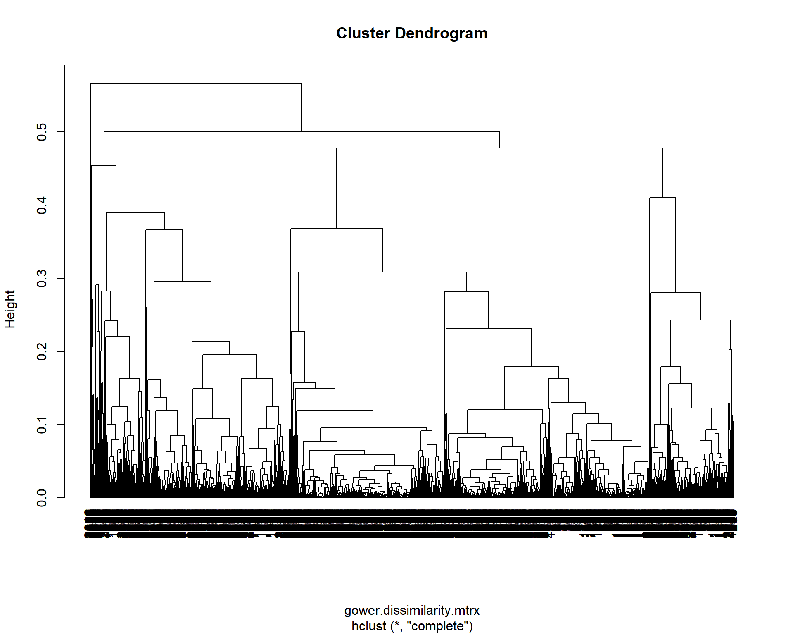
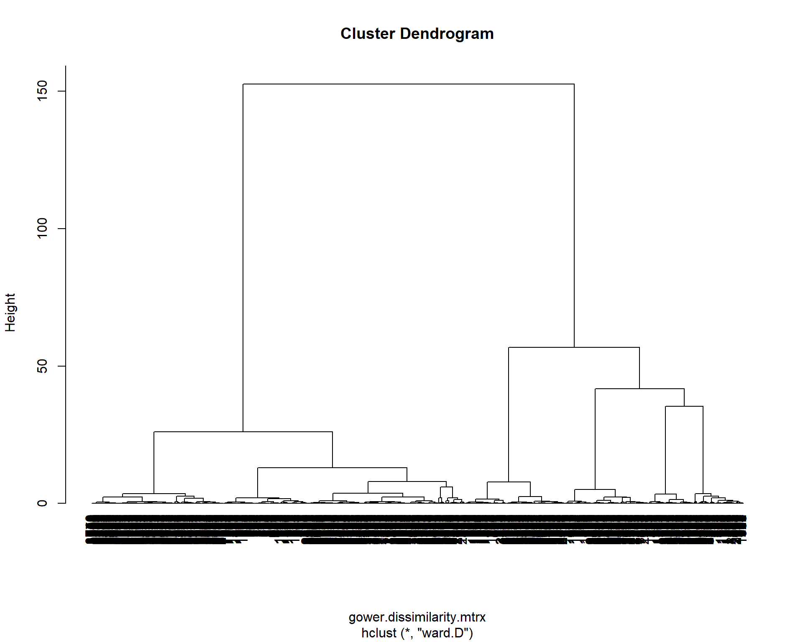
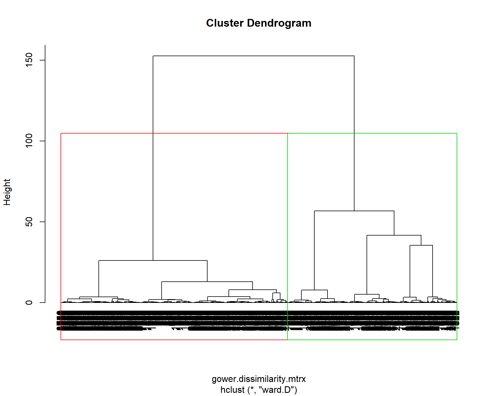
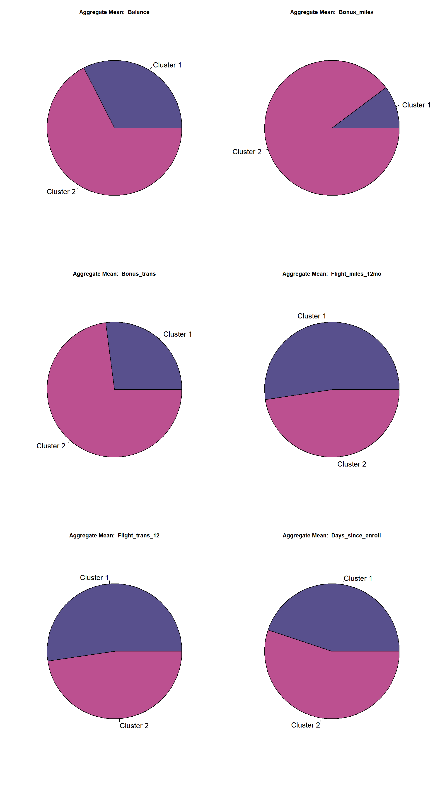
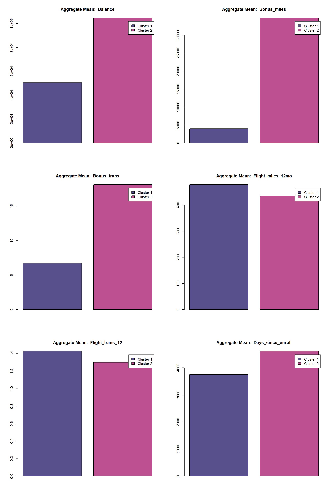

# 1-2
EastWestAirlines <- read.csv("C:/Users/Alex/Downloads/EastWestAirlinesCluster.csv")
head(EastWestAirlines)# 3
str(EastWestAirlines)## 'data.frame': 3999 obs. of 12 variables:
## $ ID. : int 1 2 3 4 5 6 7 8 9 10 ...
## $ Balance : int 28143 19244 41354 14776 97752 16420 84914 20856 443003 104860 ...
## $ Qual_miles : int 0 0 0 0 0 0 0 0 0 0 ...
## $ cc1_miles : int 1 1 1 1 4 1 3 1 3 3 ...
## $ cc2_miles : int 1 1 1 1 1 1 1 1 2 1 ...
## $ cc3_miles : int 1 1 1 1 1 1 1 1 1 1 ...
## $ Bonus_miles : int 174 215 4123 500 43300 0 27482 5250 1753 28426 ...
## $ Bonus_trans : int 1 2 4 1 26 0 25 4 43 28 ...
## $ Flight_miles_12mo: int 0 0 0 0 2077 0 0 250 3850 1150 ...
## $ Flight_trans_12 : int 0 0 0 0 4 0 0 1 12 3 ...
## $ Days_since_enroll: int 7000 6968 7034 6952 6935 6942 6994 6938 6948 6931 ...
## $ Award. : int 0 0 0 0 1 0 0 1 1 1 ...# 4
ewa <- as.data.frame(EastWestAirlines[c(-1,-12)]) # Don't need ID and Awards variables# 5
ewa$cc1_miles <- factor(ewa$cc1_miles)
ewa$cc2_miles <- factor(ewa$cc2_miles)
ewa$cc3_miles <- factor(ewa$cc3_miles)
str(ewa)## 'data.frame': 3999 obs. of 10 variables:
## $ Balance : int 28143 19244 41354 14776 97752 16420 84914 20856 443003 104860 ...
## $ Qual_miles : int 0 0 0 0 0 0 0 0 0 0 ...
## $ cc1_miles : Factor w/ 5 levels "1","2","3","4",..: 1 1 1 1 4 1 3 1 3 3 ...
## $ cc2_miles : Factor w/ 3 levels "1","2","3": 1 1 1 1 1 1 1 1 2 1 ...
## $ cc3_miles : Factor w/ 5 levels "1","2","3","4",..: 1 1 1 1 1 1 1 1 1 1 ...
## $ Bonus_miles : int 174 215 4123 500 43300 0 27482 5250 1753 28426 ...
## $ Bonus_trans : int 1 2 4 1 26 0 25 4 43 28 ...
## $ Flight_miles_12mo: int 0 0 0 0 2077 0 0 250 3850 1150 ...
## $ Flight_trans_12 : int 0 0 0 0 4 0 0 1 12 3 ...
## $ Days_since_enroll: int 7000 6968 7034 6952 6935 6942 6994 6938 6948 6931 ...# 6
# Skipped as we are going to use Gowers Distance matrixSince we have factors/categorical data, normal distance calculation using euclidean method will not work.
So we will be computing Gower’s Dissimilarity matrix
library(cluster)
gower.dissimilarity.mtrx <- daisy(x = ewa, metric = "gower")fit_hclust <- hclust(gower.dissimilarity.mtrx, method = "complete")
plot(fit_hclust, hang = -1)
fit_hclust_ward <- hclust(gower.dissimilarity.mtrx, method = "ward.D")
plot(fit_hclust_ward, hang = -1)
Since the dendrogram using Complete method is more cluttered and is difficult to intepret, we’ll be going forward with the dendrogram developed using Ward method. It is clear from the dendrogram that we should use 2 clusters as the intra distance between 2 clusters is more than any other number of group of clusters.
But to confirm further, we’ll be using NbClust package to confirm the Optimum number of clusters via majority rule.
## [1] "mcclain"
##
## Only frey, mcclain, cindex, sihouette and dunn can be computed. To compute the other indices, data matrix is needed
## Number_clusters Value_Index
## 2.0000 0.4688
## [1] "cindex"
##
## Only frey, mcclain, cindex, sihouette and dunn can be computed. To compute the other indices, data matrix is needed
## Number_clusters Value_Index
## 9.0000 0.0653
## [1] "silhouette"
##
## Only frey, mcclain, cindex, sihouette and dunn can be computed. To compute the other indices, data matrix is needed
## Number_clusters Value_Index
## 5.0000 0.6461
## [1] "dunn"
##
## Only frey, mcclain, cindex, sihouette and dunn can be computed. To compute the other indices, data matrix is needed
## Number_clusters Value_Index
## 2.0000 0.1775As 2 among the four chose 2 clusters is the best for this dataset, we’ll draw rectangle on the dendrogram to see which are the 2 clusters. 
groups2 <- as.matrix(cutree(fit_hclust_ward, k=2))
finalewa <- data.frame(ewa,groups2)
head(finalewa[-c(3:5,11)])aggregate(finalewa[-c(3:5,11)],by=list(finalewa$groups2),mean)2 Clusters: based on the Aggregate Average values, we can see that the two clusters belong to frequent fliers and infrequent fliers.

